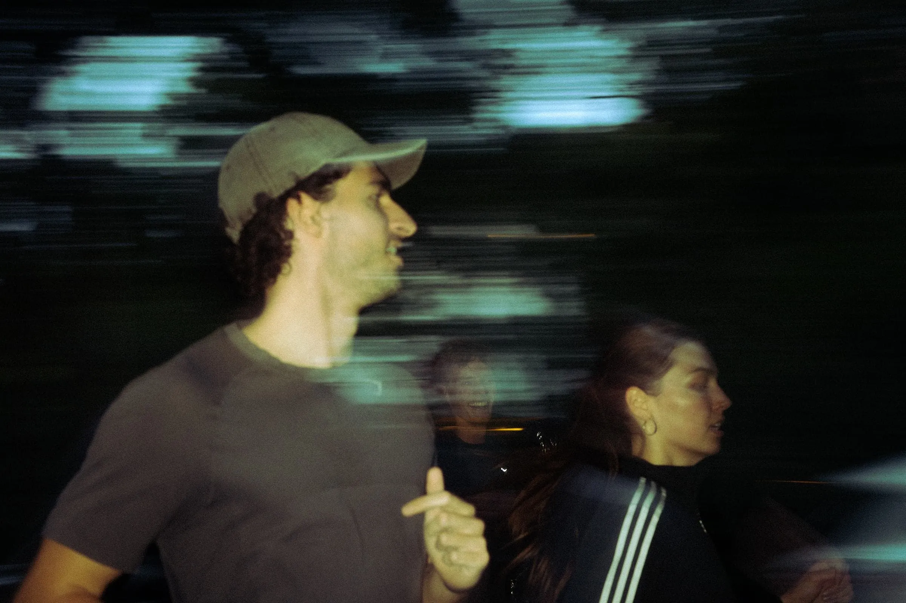
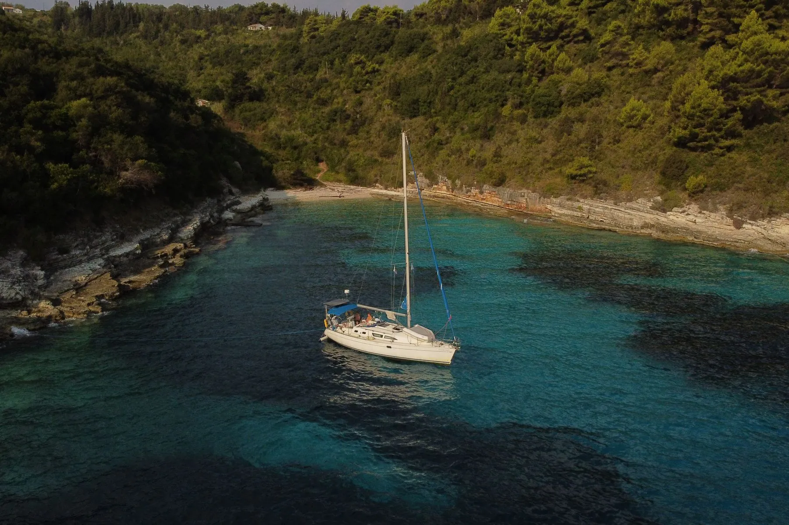

Berlin · 2026
Night Run
The Berlin Night Run was where onside.hq started. Within a few weeks, an idea became a running event with a DJ, food and drinks, an afterparty and partners like Red Bull and HEJ Natural. Every step from concept to execution was in our hands – and we bring that same standard to every new project.
View project- When
- 19.09.2026
- Where
- Berlin
- Route
- 8 km · 3 stops
- Partners
- Red Bull, HEJ Natural

Corfu · 2026
Dagen Yachtcharter
One week on board around Corfu: for Dagen Yachtcharter we produced 10 reels and daily stories to make sailing appealing to a younger audience. The result: over 270,000 views, on average 130 times more than before.
View project- When
- September 2026
- Where
- Corfu
- Content
- 10 reels · stories
- Views
- 270.000+